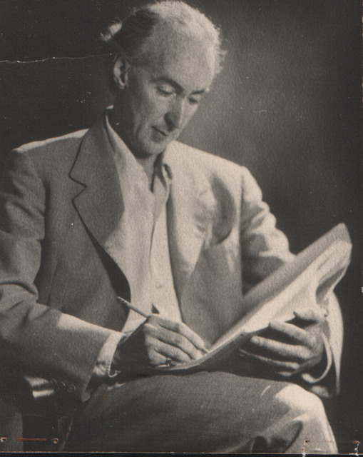
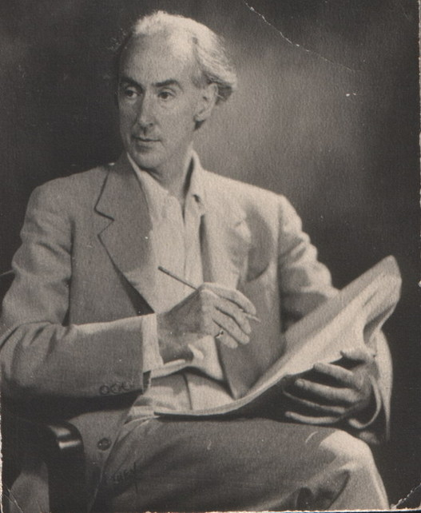

From a Notebook

The following pages are from the notebooks of Alan Harkness… (includes unsourced quotations)
![Notebook page headed ‘Original task of drama to awaken voice of compassion’, with a sketch and notes — Drama Danger of outer pain o senses Pride + Amozance Catharsis compascion V tear Danger o inner back: Egoism Original tash of drawn to waken vice a conscience Steine Ingens dramas show the ape, 9 concience. The donkee The Guardian # The stages inadrama 1 Ten Comprasion ƶ I Perception Conscience inwardly 3 wonde A Consucence productive Conscunce fortified "This mean caled in Shat an eat a hasiast at to that it The mainial Thren, in order use again withis RS. Berlin 19 05.](image/1/O3R_v6oMGxNS1P8osuA7ZQ403233/GW561H671.jpg)
“This was called the great world-tragedy, the primordial drama: that the deity descended into the material world and was buried therein, in order to rise again within man.”
R.S. Berlin 1905
Notes about the aims in our performances
To transform the everyday body so that it may move as the expression of soul and spirit. To transform the everyday speech so that the sounds and rhythms of poetry become vocal and inevitable.
A word has its gesture.
A movement has its sound.
A true drama has its form which is gesture-movement-sound-word.
There are studies which lead to these inner dynamics. When achieved in a performance they make a strong impression on an audience, even if it does not understand the actual language of the speech. The deeper levels of the human being are touched, not only the head understanding and sentiment.
With such means one can more faithfully reveal the human tragi-comedy: awaken the emotions of the audience and in the Aristotelian sense bring harmony into these emotions.
We believe that the sustenance given to the audience-psyche by such a performance is of especial value in our age when so much coarsens and deadens it.
Above all our aims are to move to tears and laughter; to invoke by the magic of theatre the unsuspected angels and even demons; and by the sympathetic participation of the audience to bring about a transformation of human nature. If only one could achieve it and if one dared say it —
the theatre as an act of redemption.
This it certainly was at its greatest and can become so again today.
The qualities we look for in the student come under four main headings:
- Actor’s Fire — Temperament — Imagination
- Psychological Truth and Characterisation
- Bodily and Vocal Expressiveness and Plasticity
- Possibility of Development — Flexibility and Openness to Suggestion
Improvisations which call for strong emotion are useful. Here are some suggestions:
- a) On the edge of a cliff — the student sees someone dangerously near its edge — it seems inevitable that the person will be killed — the student rushes forward calling out to stop him. This can be done in various atmospheres — storm, sunshine etc — and with various imaginary costumes.
- b) A mother with her dying child. She is exhausted having tended to it for days and nights and now she waits, knowing nothing more can be done.
- c) The man who comes home to his newly wed wife and finds her dead on the floor.
- d) Walking about and speaking as different characters shows many qualities.
- e) Asking some half dozen times ‘What is the time?’ justifying not having heard the answer until about the 7th time calls forth inventiveness and a feeling of truth.
- f) We often ask the student to act his piece with a different Atmosphere — Idea — Quality — Tempo to judge flexibility. One or two phrases are often sufficient for this purpose.
Penitence
On the prairie, on the shore
By the long marshes where there are only birds,
On the desert where only light moves
There will be a city
I shall bring it with me –
There will be also the man at the bar
Fumbled up in brown coats
And the butts of cigars
And banging on the counter with the tumbler
And the head of the taxi man turning “Where to?” in the slush of the snow.
I shall bring this night also
Wherever I go.
Or shall I, in the dusk of the sun
At the cross between night and day
When the powerful flames spread up
And the great shining darkness begins
And the whole hymn is sung
And the sky is washed with all the colours
And the coming of the stars…
Shall I send up these penitent wretches
These cripples on crutches
These sad, lost people, send them up
Out of my eyes when sight is given to me
Out of my limbs when they are whole?
Notes from Sprachgestaltung und Dramatische Kunst by Rudolf Steiner
(Lecture X The Mystery Character of D. Art)
… Let us seek the source of drama within the mystery-art, so that the seriousness of such a concept of drama may enter into our ordinary dramas and into the actions of our modern actors.
In the costume we see represented how the gods work into human life. The course of such a drama portrayed events that occurred among the Gods showing how these events affected human life on earth. Everything on the stage was arranged so that the spectators had the feeling: the Gods themselves have descended to the stage with a part of their beings. This effect was created by the chorus which spoke in a manner between ordinary speech and singing, a special kind of recitative accompanied by instruments. By these means a style was evolved in sounds, syllables and sentence structures which lived before the audience in the musical plastic pictorial word. This special choral-chanting was capable of such variety and individualisation that the different Gods could sound forth as though incorporated.
Through such means the audience was able to experience what we call ‘fear’ of the divine, awe and dread, but they also felt that in their moral life, within their souls, they dwellt among the Gods. These were the primary aims of the old mysteries.
But the ability to perceive anything at all within such an unnaturalistic stylisation gradually disappeared and man placed himself upon the stage, substituting his own form for the beings which could no longer be experienced through the musical plastic pictorial word.
Let us look at the Egyptian Gods — as a rule they were not adorned with insipid human faces but were given animal faces which represent permanence in contrast to the ever changing human visage. The rest of their figures were human in form to show their evolving natures, but a human face cannot remain permanently immobile without becoming fixed and dead in expression. So the Gods were given the unchanging animal mask to represent their eternal qualities. Then we see how man — when he first placed himself upon the stage as an individual — representing the God as an individual — appeared with an animal like mask. Thus the art of acting grew out of the mysteries.
… Originaly man beheld the divine within nature in thunder and lightning in the clouds, but also in the impersonal sounding of the word through the chorus, but he felt within himself the Divine spark echoing the outer manifestation. He began to feel that when he represented his innermost being this was also something divine. Thus the representation of this inner spirituality evolved out of the drama of the Gods.
… Today the actor must learn to stylise his prose, and to carry his inner experiencs into the revellations of the outer world. It is not enough if he behaves himself as he would in ordinary life. One needn’t go to the theatre to see that because life itself is even so much richer than the few meagre bits sifted out for the stage.
The following is a typed (and unsourced) inclusion in the notebook.
Exercises in Spiritual Development
(General demands to which one must set or apply oneself)
First Exercise — Control of Thinking
The first condition is the acquirement of a perfectly clear thinking. To this purpose one must — if only for a short time in the day, some five minutes, (the longer and oftener the better) — free oneself from the will-o-wisp nature of thought. One must become master of one’s thought world. Oine is not master if outer conditions, profession, some tradition, social conditions, yes even belonging to a certain race, if day and season determine one’s thoughts and the carrying out of them. So, through this exercise one must, with wholly free will, empty the soul of the ordinary every day thought flow, and out of one’s own initiative urge a thought into the centre of the soul. It need not be a dominant or interesting thought; what is to be attained in an occult respect is even better attained when one in the beginning endeavours to choose as uninteresting a thought as possible. Thereby the self-active force of the thought becomes more stimulated; while with an interesting thought the interest carries on the thought itself. One says to oneself: I start out with a thought (e.g. a pin) and link up with it, through my own initiative, all that which can reasonably be connected with it; through which fthe first thought is obliged always to remain alive before the soul. This exercise is to be pracised daily for a month. One can take a new thought daily or keep to the same one for several days. After each exercise one tries to bring to the full consciousness the inner feeling or firminess and security, which with subtle attention one will soon observe in the soul. One so concludes this exercise by thinking of one’s head and the spinal chord down in the middle of the back, in such a way as if one would let each feeling of firmness pour into this part of the body.
Second exercise — Control of Action
When one has exercised for about a month in this manner, a second demand steps in. One tries to invent any action which in the ordinary course of life up to the present has quite definitely not been taken up before. Now one performs this self chosen exercise as a duty every day. It is very good to choose an action which can be performed every day for as long a space of time as possible. Again it is better when one begins with an unimportant action to which one can, so to say, force oneself (e.g. one undertakes at a certain time of day everyday to water a plant, or look at the sky and the clouds in the same direction or to observe an object.) After a time a second such action should enter therein, after a time a third and so on, so manys as one can pursue with the maintainance of all one’s duties. This exerise should again last a month but one shouldas much as one can during this second month also occupy oneself with the first month’s exercise. But the second month’s exercise should come first, and it must never be interrupted even for one day! All the same the first exercise and its effect must not be lost sight of, otherwise one will soon observe how the fruits of the first month are lost and the old backslide of ‘uncontrollable thoughts’ begins again. Above all one must take care that these fruits, once won must not be lost again. If one has produced through the second exercise a such-like executed initiative-action, so will one, with subtle attention, become conscious of a feeling of an inner activity impulse within the soul and one will soon pour, as it were, this feeling so into one’s body that one lets it stream from the head down into the heart.
Third Exercise — Equanimity
In the third month, should be pushed into the centre of life, as a new exercise, the cultivation of a certain equanimity — as opposed to fluctuation between joy and sorrow, pleasure and pain; the exalting as high as heaven and grieving to death should with consciousness be replaced by an equable mood. One takes care that no joy runs away with one, no pain smites one to the ground, that no experience rends one with immoderate anger and vexation; no situation puts one out of countenance; that no expectation fills one either with anxiousness or joy and so on. One need not fear that such an exercise makes one empty and lacking in the fullness of life. One will rather observe much more in place of this that what proceeds from the exercise brings forth refined qualities. Above all one feels with subtle awareness one day, an inner peace; also one pours this subtle feeling into one’s body in that one consciously lets it flow from the heart to the hands, feet and finally the head. This naturally cannot be taken after each single exercise for one has in truth not to do with one single exercise but with a continual awareness of one’s inner life. But one must, at least once in the day, call before the soul this inner peace and then undertake the exercise of the streaming out from the head to the hands and feet.
Fourth Exercise — Positiveness/Seeking Good
In the fourth month one undertakes a new exercise which may be called Positiveness. This consists in seeking out continually the existing Good, Beautiful and Excellent in all experiences, natures and things. This quality in respect to the activity of the soul is best characterised by the Persian legend of Christ Jesus and the dead dog. If the esoteric student does this exercise he will soon observe that under cover of ugliness a hidden beauty exists; that even in a criminal lies veiled a hidden goodness, that in a lunatic somehow the divine lies hidden. This exercise is connected with that which one calls forbearance from criticism. Now, one must not comprehend it in such a way that one would call black white or white, black. But there is a difference between a judgement which proceeds merely from one’s own personality and its sympathies and antipathies and a judgement which proceeds from the point of view of lovingly putting oneself in the place of a foreign being or stranger and without a single criticism, questioning oneself: How does this thing or being come to this, so to be or so to act? Then one comes to it gradually and quite of oneself to strive to help the imperfect instead of merely criicising, blaming or setting in order. The objection that life conditions of many people require them to criticise, blame or judge cannot be made here. There are, even many conditions present which make it impossible to carry out an occult training as here indicated, in any measure of fruitfulness. But here one should not impatiently wish all the same to make progress which can only be made under certain conditions. He who during a month can consciously place positivity in all his experiences will, little by little, observe a feeling in his inner being as if his skin were porous from all sides and his soul open itself to all secret and subtle events in the surroundings which before had completely escaped his notice. Therefore the point is to combat existing inattentiveness in man toward such subtle things. If one has filled this described feeling of the soul with a kind of beatitude then one so tries to draw his feeling towards the heart in thoughts and from there to let it stream into the eyes and out into space beyond and around the human being. Through this one grows, as it were, above one’s self. One learns to observe a piece of one’s surroundings as one observes a part of oneself that contains a quite intimate relation to the surroundings. A great deal of concentration is necessary for this exercise and above all things a recognition of the fact that all that is emotional, passionate and affected works destructively against the indicated mood.
Fifth Exercise — Impartiality towards what Life gives
In the fifth month then one tries to cultivate in oneself the feeling of meeting in an entirely unprejudiced manner, every new phenomenon. The esoteric student must completely break with man’s ordinary attitude toward what comes to his hearing or to an occurence about which he then says: ‘I have never heard that or seen that; I heard otherwise; I do not believe it.’ The student must be ever ready to accept a perfectly new experience even when it contradicts his former experiences. For, all which hitherto he has recognised as legitimate; what till now has appeared to him as impossible — must not fetter him so that he be hindered in his reception of a new truth. The esoteric student must ever hold open the door for the belief that his hitherto existing knowledge can always experience a widening. He who in the fifth month is so minded to direct his attention on it will observe that a feeling creeps into his sould as is in that space which was spoken of in the previous exercise; something would come alive, as if something would stir in it. This feeling is extraordinarily fine and subtle. One must now try attentively to grasp this subtle vibration in the surroundings and let it, as it were, flow in through the skin in so far as the latter contains the sense of warmth. Less attention is applied at this stage towards impressions in the other senses, i.e. taste, smell etc, for it is at this stage of development not yet possible to distinguish the influences. Therefore the student leaves attention on taste, smell, etc to a later stage.
Sixth Exercise: Perseverance
In the sixth month one tries systematically in a regular alternation, again and again, to undertake all five exercises. Gradually through this a fine equilibrium of the soul is formed. One will especially observe that any existing discontent with the concerns or phenomena of the world will completely vanish. A propitiable mood arises in the soul in regard to all experiences. This is in no way an indifference. On the contrary the student qualifies essentially more than ever to function improvingly and progressively in the world. A quiet understanding unfolds itself for the things which earlier were completely shut off from the soul. Even the gait and gestures of a person alter under the influence of this exercise. And when, even, a person can observe one day that his handwriting has taken on another character then he may say that he is even now about to reach another stage on the forward path. Once again two things must be emphasised:
1) That this exercise has the power to paralyse the unfavourable so that only the positive remains present — and
2) That this attitude alone really assures positive success in Meditation and Concentration work.
The merely conscientious fulfillment of current morals does not satisfy the esoteric student, for these morals can be egoistic in so far as a person perhaps says to himself: ‘I will be good so that I may be found good.’ The esoteric student does good, not because he wishes to be found good but because he knows little by little that Good alone brings forward the evolution of the world to its final goal and that against this the Bad, Unwise and Ugly place continually temporal hindrances in the path of evolution.
Notes on Pipwick (from studying engravings)
- The characters are full of temperament. They keep nothing inside but open themselves in a lot of gestures, situations, positions, etc. There is nothing restrained about the characters or the situations. When a character is restricted Dickens describes it as an exceptional thing — ie the incident of the two restrained gentlemen wherein one deliberately walked within the eyes of the other.
- In studying the engravings you will see how the figures are expressing emotions. We must act so that if the expression is to be shown on the stage it must be shown with the whole body.
- The manner in which they bow and do everything is so particular — if you study the engravings you will see what kind of movements must be made. This will help you to wear the costumes in the right manner.
- One thing you must not take from the engravings — the grimace.
- Pay special attention to bridges and transitions in the play. We must make everything seem psychologically complicated — everything in Dickens has been so compressed to such a point that he looks at things through a microscope. In imagining your characters imagine them as very complicated — your acting must be the result of very complicated work, although in the end we may do it absolutely simply.
- By studying the engravings you will begin to feel that these people’s lives are not continuously flowing but are expressed by means of bridges and transitions and points. Moving, stopping and moving.
- The settings will be slightly out of perspective as suggested by the engravings — this may also be true of the costumes.
- There will also be an element of dust about the costumes and settings so that they will give an old appearance, although the colour will not disappear. The audience must feel that it is a ‘tasty dish’.
- Do not look at the engravings from the point of view of aesthetic or intellectual pleasure, but really act them in your imagination. Re-live the pictures and make them live for you.
- Read the novel as well as the play.
‘Duty — when a man loves the commands he gives to himself.’ Goethe, Prose Aphorisms
‘That which is fruitful alone is true.’ Goethe
The earth woke up again
– The earth woke up again –
You were waiting in a taxi stemmed by the traffic
headed off and back and on
and those who called you did not know your name
You answered – and your face was in the glass,
and the earth died under the stones
and there were many words and many words
and your heart beat in the taxi
impatient to be dead, to sleep again
after the torment of continuance
the chain of house to house
across the dead scowl of the city
the grin……
Spring, summer, winter, falling
without one fruit, one leaf returning
– you still alive in the dead earth –
The earth woke up again…
Hark at the noise all night
the cicadas
hark how it swells and swells and blooms
root under root up-piercing
the ferny fringed bladed arrowing
sharp and spreading billowed tapering
bell’d and hooded million tongued,
wind lulled wind whipped fragrant million eyed
ears of the earth –
Listen! it wakes again
There is no house only windows
walls are leaf thin
and the city as the bloomed skin
of an almost ripened fruit breaks open –
And if you died the Earth would waken you –
Two dangers:
- The cosmic void — loss of consciousness
- The descent into one’s own being — egoism
(Greek Aeschylus tells of these dangers and how they are overcome by infinite compassion for all creatures.) These two dangers overcome by Christ impulse.
The study of universe, earth and man must pass over from theoretical consideration so that our own will and enthusiasm may be fired for further development. What we call ‘future’ must be rooted in the past; knowledge has no value if not changed into motive power for the future.

He who binds to himself a joy
Does the winged life destroy
But he who kisses joy as it flies
Lives in Eternity’s sunrise(William Blake)